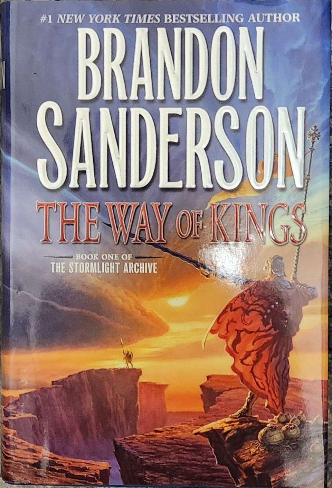
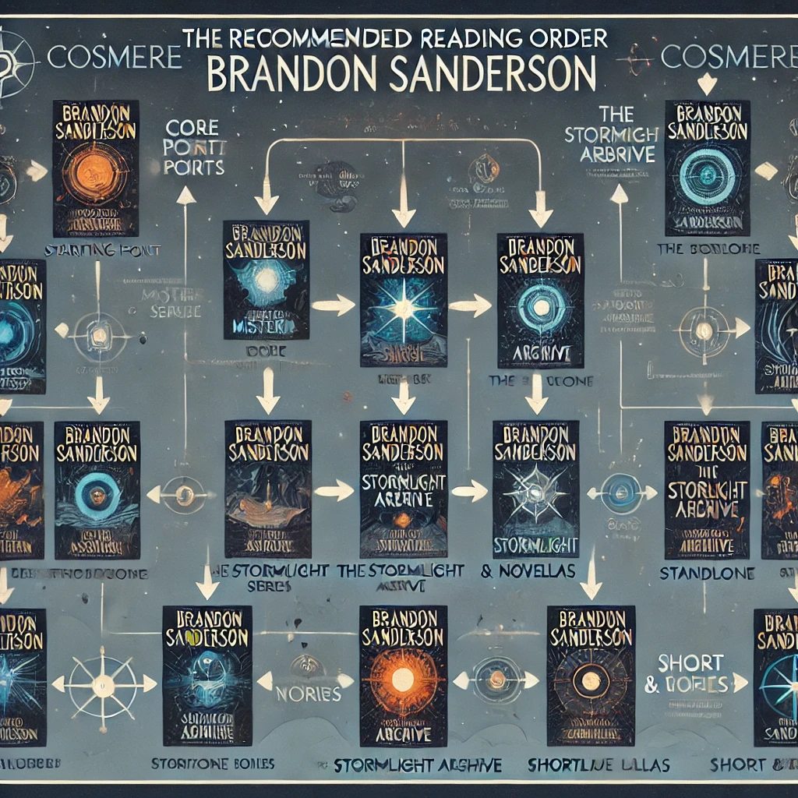

The Cosmere is a popular collection of fantasy novels written by Brandon Sanderson. These include the Stormlight Archive series, the Mistborn series, 3 novellas, short stories, and 5 independent books, a total of 21 books. Each of these books is part of the same universe/cosmology; however, they each contain vastly different and unique stories that are amazing independently but also interconnect in amazing ways. The Cosmere can be thought of as the MCU of fantasy novels, but in my opinion, it's better. Personally, I have only read the Stormlight Archive and most of the Mistborn series, so most of the information on this page will be about those two series.
Here is a quick introduction to the two main series within the Cosmere, Stormlight Archive and Mistborn, and don't worry, there are only light spoilers on the setup of the first books of the series. The Stormlight Archive is predominantly about 3 characters navigating their way through life on the planet Roshar, which is a fantastical world with swords that cut through souls, armor that makes you superhuman, warring nations, Spren (wisp/ghostly manifistations of emotion), and the Highstorm (a periodic hurrican the size of the continent that circles the globe). Mistborn is predominantly about 2 characters and their life on the dystopian planet of Scadrial, which has red skies, it rains ash, plants wither, the common people are treated as slaves to the nobility, and the Lord Ruler, an immortal demi-god, rules the world.
Cosmere Logo from Cosmer wiki, posted by DefinitelyAFriendlyDragon.
Why would you want to Read the Cosmere
You may be asking yourself, “Why should I read these books?” because these books (especially the Stormlight Archive) are some of, if not the best pieces of fiction I have ever consumed. They contain complex and intriguing stories, amazing action, the best-written worldbuilding/magic systems, the best-written characters and character developments, and so much more. In terms of genres, they cover a wide range, including fantasy, action, political conflict, underdogs, romance, heists, backstabing, revolution, revenge, and many more. These books are amazing and beloved by many, hints why he has sold over 40 million copies worldwide, I would recommend to at least check them out.
Open source picture depicting a bestselling book, from websiteOpen source picture depicting a lady contemplating, from website
How to Read the Cosmere
These books can be read through a variety of media, but primarily through physical books, ebooks, or audiobooks. The physical and ebooks can easily be ordered/bought through Amazon, DragonSteel books (Sanderson’s personal publisher), or other bookstore websites. The audiobooks, which I personally recommend, can easily be found on Audible. I recommend the audiobook version because it is convenient and it hosts talented voice actors that help bring the stories to life.

Photo of my personal copy of The Way of Kings, first book of the Stormlight ArchiveScreen shot from my audible library of The Final Empire, the first book of Mistborn
When to Read
These books can be read at any time; however, they will require multiple reading sessions so do not expect any of these to be read in one or two nights. These books, especially the books in the Stormlight Archive, are LONG and so I recommend reading/listening to the audio book version for more convenience. For instance, I am currently reading the 6th book in the Mistborn series and I listen to the audiobook while I drive, do chores, walk to class, eat, or play Minecraft. These listening sessions are normally short, ranging from 20 minutes to 2 hours, however, over time this accumulates, so a long book like The Way of Kings (the first in the Stormlight Archive, which is 45.5 hours long) can be read in a few weeks.
An ai image of guy listening to audiobooks while driving. Prompt: "generate an image. The image should show the back of a man's head while he drives. The man has earbuds in his ears. Photorealism."Open source picture depicting a long book, from website
Where to Start Reading
Considering how complex and interconnected these books are, there is some contention within the fan community over the order to read the books, what series to read first, and if you need to read the novellas, short stories, and independent books. Personally I recommend reading the Mistborn series first because it is much shorter and more accessible to new readers; however, the Stormlight Archive is Sanderson’s magnum opus. As for the supporting books, novellas, and short stories, they are not needed to enjoy these series (I haven’t read any of them), but from what I heard, they enhance the story and contain many references to other series. Both of the major series contain halfway points, Mistborn is split into era 1 and era 2 which can be technically read in either order but era 1 is highly recommended, and the Stormlight Archive is technically split into two, however Sanderson just finished the arc 1 with the 5th book, so arc 2 is years away.
Photo of my personal copies of Mistborn era 1 and the Stormlight Archive

An ai image emulating the order to read the books. Prompt: "generate an image. The image should detail the recommended reading order of Brandon Sanderson's Cosmere books"
Who are the Important Charaters
Here are short descriptions of each of the predominant characters in these series:
Stormlight Archive:
Shallan - The daughter of a noble family sets out to convince the smartest woman in the world to take her as her protégé. However, she secretly plans to trick and steal from the women to pay off her family’s crippling debt.
Dalinar - The most influential noble of the strongest kingdom on Roshar, he seeks to navigate the political strife, as well as protect his kingdom and nephew (the king). He has been having visions of calamities and warnings of a coming danger, however, he is unsure if he is going senile, insane, or are they from a higher power.
Kaladin - A commoner who has been forced into a life of misery and slavery. He is sold to the frontlines of a war to be disposable labor, however, he tries his best to hold onto his humanity in this horific war. Kaladin isn’t alone however, a spen has been following him around, a wisp/ghostly manifestation of wind. These normally have low to no intelligence; the most they can do is play small pranks, however, this one is following him around and can speak.
Mistborn:
Kelsier - A notorious thief who hates, steals, and kills the nobility. He has returned from captivity with revenge on his mind and supernatural powers to reach his climbing ambitions.
Vin - An orphaned street kid who is trying her best to survive in the criminal underworld. After her brother abandons her with his debts, she is forced to work in a thieving crew. Despite her being poor, abused, and alone, she survives using her wits, acting skills, and a mysterious power.
Photo of my personal copy of the Mistborn boardgame, depicting Vin
AI
Here is a list of the prompts I used:
"I need a set of links that DO NOT leave the page, instead they show specific sections within the html page. When a link is clicked it should hide all other sections then display only the corresponding section. Use html, css, and js to accomplish the desired outcome. Here is an example of a section in the html page: (I included the 'what' section's code)"
For the favicon I used: "generate a small basic icon of a sword. the background should be transparent. the sword should be solid #faf6de"